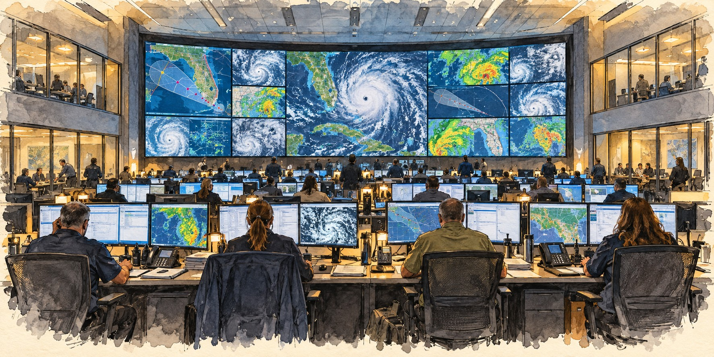

Inside Florida’s Emergency Operations Centers
Where Twenty Agencies Become One Room

Florida’s State Emergency Operations Center in Tallahassee brings agencies together before, during and after a disaster. Maps, weather information and reports from the field help representatives coordinate the state’s response. The SEOC is a shared workplace for partners whose ordinary offices and responsibilities are spread across Florida.
A Building Born From Andrew
The earlier SEOC was a product of Hurricane Andrew’s lessons. It served through Charley, Frances and Jeanne, Wilma, Irma and Ian, but its limited space strained as Florida’s population and disaster demands grew. Florida eventually replaced it with a larger facility designed to maintain operations during severe weather.
A New Building
On February 24, 2026, the Florida Division of Emergency Management celebrated the opening of its new, 208,400-square-foot SEOC. The agency said the operations floor had more than twice the former space. The SEOC wing was designed to withstand wind speeds up to 200 miles per hour, with three backup generators to help maintain operations during severe weather.
The new building’s video wall measures 95 by 13 feet and can combine weather monitoring, mapping and live incident feeds. Dedicated work areas and logistics facilities support collaboration and resource distribution. Funding was approved during the 2021–2022 fiscal year.
Twenty Functions, One Response
The building matters because of the system it houses. Florida’s State Emergency Response Team, operational since 1994, works through Emergency Support Functions, each led by a designated state agency. ESF 1, led by the Department of Transportation, keeps evacuation routes, roads, bridges and ports working. ESF 6 coordinates mass care, ESF 9 search and rescue, ESF 18 business and economic continuity, and specialist teams support cybersecurity incident response.
From Monitoring to Full Activation
Activation follows three levels. At Level 3, the SEOC monitors a developing threat through the Division’s 24-hour State Watch Office. At Level 2, selected ESFs are notified and begin staffing. Level 1 is full emergency response, with representatives of dozens of agencies side by side on the floor. The SEOC activates for more than hurricanes, including public health emergencies and major planned events.
A web-based platform, WebEOC, lets county, state, federal, volunteer and mutual-aid partners work from the same picture, extending the room in Tallahassee out to county emergency centers and field responders.
Quick Facts
| Location | Tallahassee, Florida |
|---|---|
| Old SEOC | Earlier Tallahassee facility; historical wind rating omitted |
| New SEOC | Opened February 24, 2026; 208,400 sq. ft. |
| Wind rating (new) | Up to 200 mph sustained |
| Operations floor (new) | More than 200 people |
| Coordinating team | State Emergency Response Team (SERT), operating through Emergency Support Functions |
| Activation levels | 3 monitoring; 2 partial; 1 full |
| Digital platform | WebEOC, a shared web-based coordination system |
Did You Know?
The new SEOC’s display wall is 95 feet wide.
The center coordinates support across agencies during hurricane activations.
One of the newest response functions handles cybersecurity incidents.
Vocabulary
Emergency Support Function (ESF): a group of agencies organized around one type of disaster task, such as transportation or mass care.
Activation level: the degree to which an emergency operations center is staffed and engaged.
WebEOC: a shared online platform for tracking missions and requests during emergencies.
Discussion Questions
Why does it matter that the command center could itself be hit by the storm it is coordinating?
How do the three activation levels let Florida match its response to a threat?
Related Articles
FLH-0014 — The Birth of Florida Emergency Management
FLH-0013 — Why FEMA Was Created
FLH-0007 — Hurricane Andrew (1992)
FLH-0012 — Hurricane Ian (2022)
Sources
Florida Division of Emergency Management. “EOC Activation Levels,” “SERT: State Emergency Response Team,” and “Emergency Support Functions.” floridadisaster.org
WCTV. “Florida Opens New State Emergency Operations Center in Tallahassee.” wctv.tv
WCTV. “Inside Florida’s New Emergency Operations Center, Rated for a CAT 5 Hurricane.” wctv.tv
WFSU News / WGCU / WUSF / WUFT. “New Florida Emergency HQ Built to Withstand Major Hurricane Strike.”
State of Florida Comprehensive Emergency Management Plan, 2018 Draft. floridadisaster.org